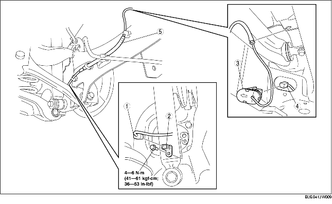

1. Quitar la tapa inferior (trasera).
2. Quitar según el orden indicado en la tabla.
3. Instalar en el orden contrario al de la remoción.

.
|
1
|
Conector
|
|
2
|
Sensor velocidad rueda ABS trasera
|
|
3
|
Tapa del orificio ABS
|
|
4
|
Conector
|
|
5
|
Cableado del sensor velocidad rueda ABS trasera
|
1. Desconectar el conector del sensor trasero del regulador automático de los faros. (vehículos con sensor regulador automático faros)
2. Empujar la lengüeta de la tapa del orificio ABS para separar la tapa de la carrocería.
3. Quitar la tapa del orificio ABS de la carrocería.
1. Colocar el cableado del sensor velocidad rueda ABS trasera afuera del cable del freno de estacionamiento trasero como se muestra en la figura.
2. Instalar el cableado del sensor velocidad rueda ABS trasera.
1. Instalar la tapa del orificio ABS en la carrocería de manera que la flecha esté orientada hacia el lado exterior del vehículo.